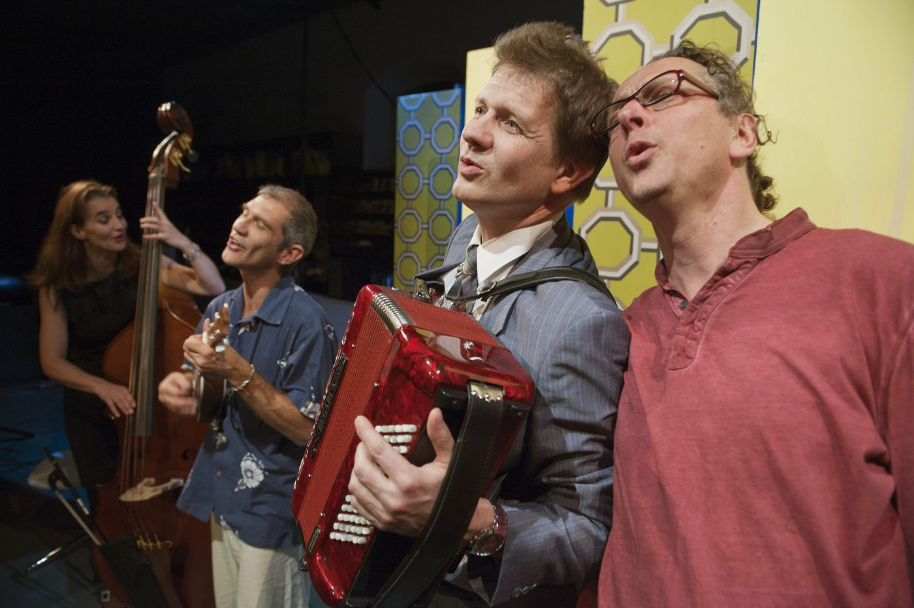
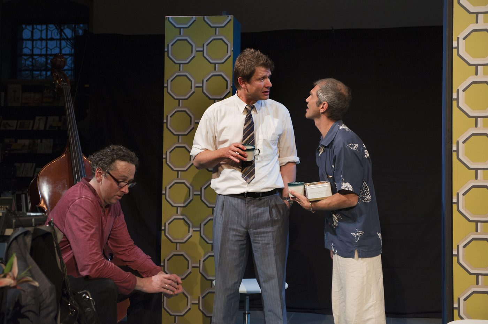
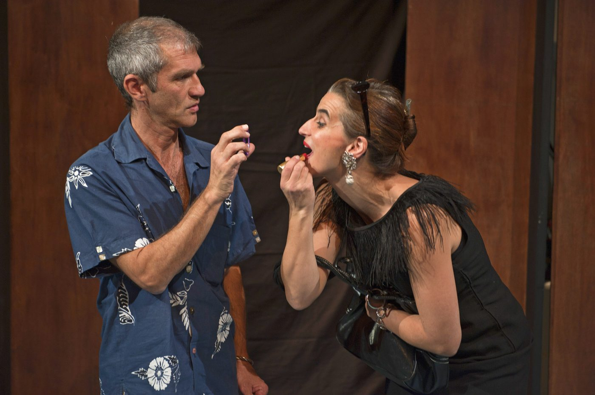
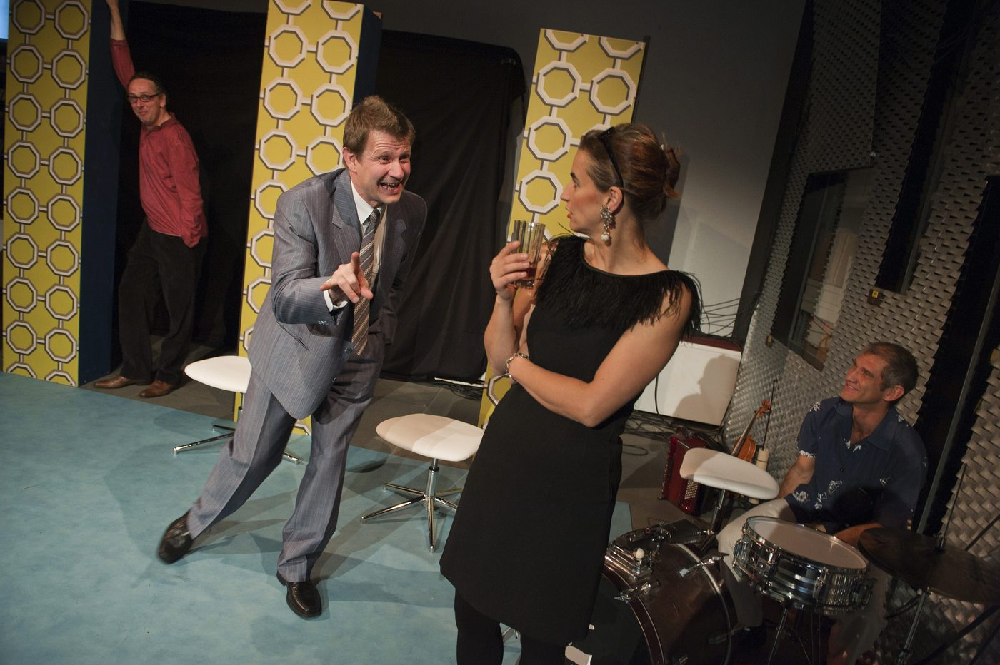
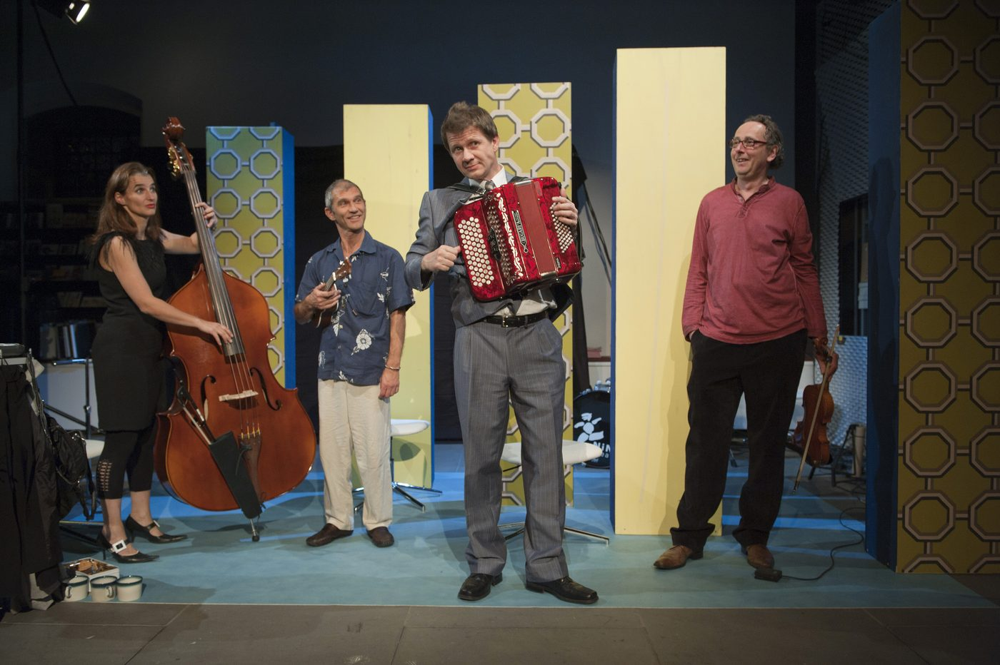

Eltern sterben, Freunde verschwinden, Ehen lösen sich auf. Aber Geschwister können sich nicht scheiden lassen: Die Bande sind also stark, und bevor man sich über das Erbe, verratene Ideale oder das Desaster mit der gemeinsam gebauten Benzinbombe in die Haare gerät, greift man lieber in die Saiten, der Harmonie(n) wegen. Denn was die Geschwister verbindet, ist die Musik, sind die Songs von damals, als die Welt offen und Träume noch möglich waren. Und während man in Erinnerungen swingt, rockt und singt, keimt – leise, still und heimlich – die Frage nach Mutters Geheimnis… und man wird feststellen, dass meistens alles ganz anders ist als erwartet, und man nie zu alt ist, um selber über sein Leben zu bestimmen.
2012 entstand in Zusammenarbeit mit Radio RaBe eine Hörbuchversion in neun Episoden.
«Eine Geschichte, wie sie das Leben wohl tausendmal schrieb, wird in der Interpretation des NiNA Theaters zu einem fulminanten Theaterereignis. Witzig, unterhaltsam, frech […] Unbedingt sehenswert.» Hugo Bischof, Neue Luzerner Zeitung, 16.11.2011
- Spiel
- Franziska Senn, Roland Kneubühler, Reto Baumgartner, Ueli Blum
- Musik
- Michael Wernli
- Regie
- Ueli Blum, Adrian Meyer
- Ausstattung
- Valérie Soland
- Produktionsleitung
- Eva Batz-Deschler




